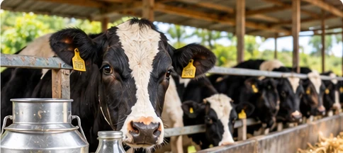
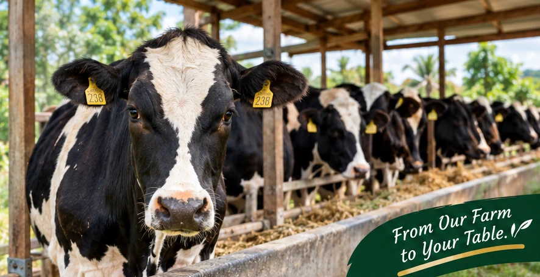
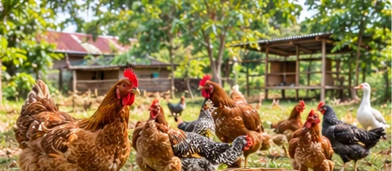
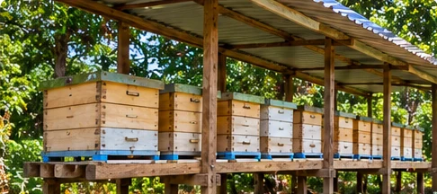

01 · DAIRY
Fresh Milk and Sour Milk
Our current dairy operation includes eight cows being milked and three calves. We offer raw milk and sour milk, subject to availability and confirmation.
Enquire About Dairy →FAMILY FARMING · BUSIA COUNTY, KENYA
We are a family farm near Airstrip Primary School in Busia County, Kenya. We bring together dairy farming, poultry production and beekeeping with a commitment to responsible farming and careful handling of our products.
Afya bora ni chakula cha asili.
Near Airstrip Primary School, Busia County, Kenya

FROM OUR FARM
Explore our dairy, poultry and beekeeping operations. Contact us to confirm availability, quantities and prices.

01 · DAIRY
Our current dairy operation includes eight cows being milked and three calves. We offer raw milk and sour milk, subject to availability and confirmation.
Enquire About Dairy →
02 · POULTRY
Our poultry enterprises include approximately 100 Kienyeji birds, 300 broilers and 300 layers, alongside geese and goslings. Poultry manure may also be available.
Enquire About Poultry →
03 · APICULTURE
Our apiary has 25 colonised modern Langstroth hives. Enquire about honey, beeswax, hives, bee colonies, practical training and consultancy.
Explore Beekeeping →Product availability, prices, collection and delivery arrangements are confirmed before an order is accepted.
OUR STORY · MORE THAN 30 YEARS
Da et Ma Gardens grew from the family farming journey of Daniel and Margaret. They began farming to provide milk for their young family. When neighbours started buying surplus milk, a family activity began developing into an agricultural enterprise.
Today, we bring together dairy farming, poultry and beekeeping. We remain committed to serving our community, handling products carefully and building our farm responsibly.
Our story continues as we learn, improve our practices and explore opportunities to serve more customers.
GROW WITH US
We welcome individual customers, farmers, businesses, institutions and potential partners.
Discuss larger orders and potential ongoing supply arrangements for available products.
02Enquire about visiting our agricultural operations. Visits should be arranged in advance.
03Ask about practical learning and guidance in dairy, poultry, beekeeping and mixed farming.
04Explore potential collaborations, supply relationships, training and responsible agricultural development.
OUR FARMING APPROACH
We place importance on careful handling, hygiene, responsible care for our animals and bees, and honest communication with customers.
We aim to minimise unnecessary chemical use where practical and continue improving our farm management and record-keeping practices.
We do not claim organic certification. Customers should enquire about the handling, storage and requirements relevant to individual products.
OUR FUTURE PLANS
Our ambitions include expanding production and exploring more ways to add value to agricultural products. These are future goals, not current production levels.
Work towards a larger dairy herd and explore value-added products such as yoghurt, cheese and ghee.
Aim to expand the layer enterprise and improve the scale and management of poultry production.
Grow the apiary and explore value-added products such as beeswax candles.
Explore additional livestock, improved farm systems and new agricultural partnerships.
LET'S TALK
Send us your order or enquiry. We will confirm availability, prices and fulfilment arrangements before accepting your order.
Call or WhatsApp: +254 737 672 356
WE'D LOVE TO HEAR FROM YOU
Da et Ma Gardens · Near Airstrip Primary School, Busia County, Kenya